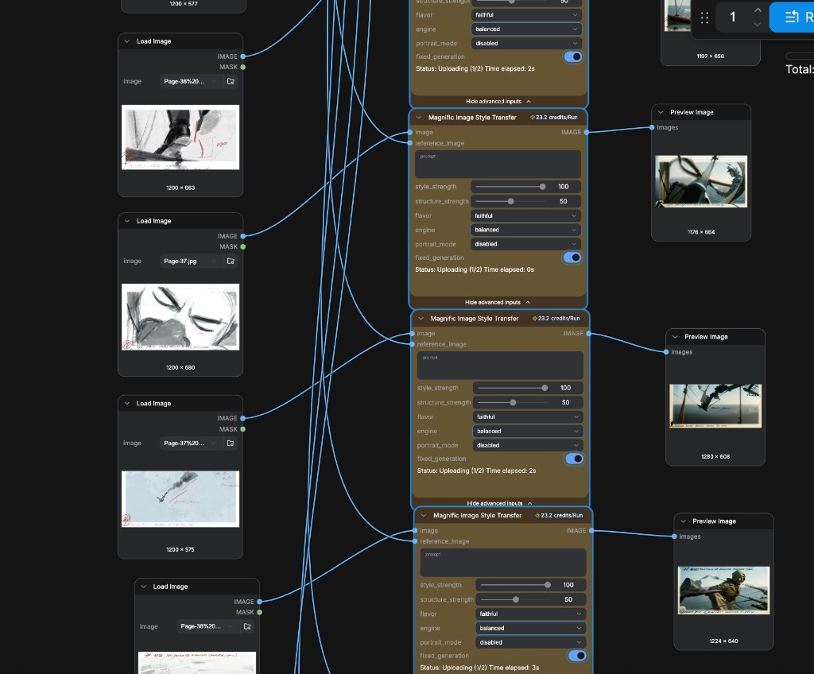
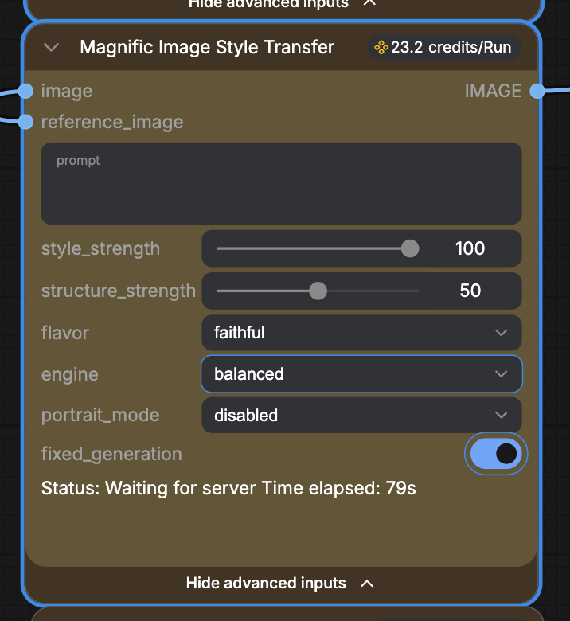

ComfyUI · Magnific · Style Transfer · AI Workflow

A production ComfyUI workflow for translating hand-drawn storyboard sketches into fully rendered cinematic frames. Source drawings — charcoal, ink, and pencil — are fed into a parallel Magnific Image Style Transfer pipeline alongside a cinematic reference, producing stylistically coherent outputs that preserve the original composition while inheriting lighting, atmosphere, and color grade from the reference material.
This workflow was built as a direct extension of earlier style transfer research, moving from single-image exploration into a scalable, batch-parallel production system designed for multi-frame storyboard sequences.
Why Magnific over ControlNet / IP-Adapter
Standard style transfer stacks in ComfyUI — ControlNet canny/lineart conditioning paired with IP-Adapter or style LoRAs — perform well when source and target share visual register. The sketch-to-cinematic gap is a harder problem: the source carries no texture, no lighting, and no depth information. ControlNet preserves structure but cannot synthesize photorealistic lighting from line art alone. IP-Adapter transfers style globally but frequently loses structural fidelity on loose sketch inputs.
Magnific's Image Style Transfer node approaches the problem differently. It separates structural preservation from stylistic transformation into two independent control axes, allowing precise calibration of how much of the original sketch's composition survives versus how aggressively the cinematic reference overrides the input. For sketch-to-render workflows, this decoupling is the critical technical advantage.
The Magnific Node — Parameter Breakdown

| style_strength | 100 | Maximum stylistic transformation. At 100, the node makes no attempt to preserve the sketch's visual texture — the output inherits color, lighting, and rendering quality entirely from the reference. This is the correct setting when the source is a raw sketch with no tonal information worth preserving. |
| structure_strength | 50 | The most critical parameter for sketch input. At 50, the pipeline preserves compositional geometry — figure placement, depth planes, directional motion — without being locked to the sketch's rough linework artifacts. Too high (80–100) and sketch jaggedness bleeds into the output. Too low (10–20) and the cinematic reference overwhelms composition, losing the original framing. 50 is the empirically calibrated midpoint for charcoal/ink source material. |
| flavor | faithful | Disables creative deviation. The "creative" flavor allows the model to hallucinate detail beyond the reference — useful for purely generative work but counterproductive here, where the reference image defines a specific, locked aesthetic. "Faithful" keeps the model anchored to the reference's actual visual language. |
| engine | balanced | Trades peak quality for cross-frame consistency. In a multi-node parallel batch, the "quality" engine can introduce stylistic drift between outputs as it optimizes each frame independently. "Balanced" produces slightly lower individual fidelity but maintains tighter visual coherence across the full sequence — essential for storyboard workflows where frames must read as a unified set. |
| fixed_generation | on | Locks the random seed across the batch. Without this, re-running the workflow produces different stylistic interpretations of the same input. With it enabled, results are deterministic — allowing iterative parameter adjustments without losing the current output as a baseline comparison. |
| portrait_mode | disabled | Portrait mode enables face-specific enhancement processing. Disabled here because the source material is full-frame compositional scenes, not portrait crops — enabling it would apply inappropriate face-optimized processing to landscape action frames. |
Workflow Architecture
The pipeline uses a parallel multi-input topology: each source sketch routes through its own dedicated Magnific node rather than processing sequentially through a shared pass. This design has two advantages. First, processing time scales with the slowest single node rather than the total node count — a batch of six sketches completes in roughly the same wall-clock time as a single image. Second, each node can receive per-frame parameter overrides if a specific sketch requires different structure preservation, without affecting the rest of the batch.
All nodes share the same reference image input via a single Load Image node wired to every style transfer node's reference_image port. This ensures stylistic coherence across the full output set — every frame is conditioned on identical reference material, preventing the tonal drift that occurs when references are applied independently.
Structural Preservation in Practice
The outputs demonstrate the calibration working as intended. Compositional elements from the sketches — figure positions, horizon lines, implied depth, directional energy of mark-making — survive the transformation and remain readable in the final cinematic frames. The loose, gestural quality of the source drawings is absorbed rather than fought: the model treats gestural marks as compositional intent rather than noise to be corrected.
This is the harder problem in sketch-to-render workflows. Preserving tight technical drawings is straightforward. Preserving the spatial logic of loose expressive sketches while synthesizing fully rendered photorealistic output requires a model that operates at the semantic level of composition rather than the pixel level of linework.